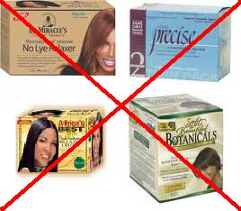

Ive's Hair JourneyLike many young girls with “curly, unruly, bad hair,” at the age of 14 I got my first relaxer. This was considered a rite of passage, as it is for many young girls with this similar “issue.” I was told at a very young age that my hair was so bad that lice would not be able to survive in it because my curls would strangle them, especially since lice only like “nice” straight hair. When I was finally old enough it was very important for me to get my hair relaxed and go to the salon with the other relaxed girls.
Prior to this my big, curly, natural, unprocessed hair was bra strap length, healthy and manageable. On the day of my first relaxer, my hair was cut above my shoulders, it was styled in a new, mature way, and I was so happy to have my hair soft and flowy. Until my first wash... When I washed my hair after having it relaxed for the first time, my hair was so short and so straight that it stretched when it was wet. My hair no longer curled nor did it puff out. This was due to the over processing and negative reaction to the chemicals in the relaxer. At the time I did not know what was happening to my hair; I thought it was normal to have the relaxer on for 30 to 40 minutes at a time and then have half a bottle of apple cider vinegar poured on it while I screamed and squirmed in the chair because the relaxer would burn right through the skin on my scalp. All this, while simultaneously being told that this was the price to pay to have my bad hair look good. All of this may seem like torture, but little did I know that for the next 15 years I would be a slave to the relaxer. My hair never again made it past my shoulders because every time I got a relaxer I had to have the ends trimmed. This led to absolutely no length retention since the relaxer was causing breakage and dryness. Any bit of length was cut every 2 to 3 month when I went in for the touch up. Growing tired of all the pain and suffering, I started stretching the time in between my relaxers and other women with similar hair would ask why I relaxed if my hair wasn’t that bad. You see, when your hair is relaxed and you have new growth the contrast is so big that you don’t want any curls at all, it makes your hair look puffy and undone. I started to notice other women with my similar hair type going natural and I started to consider this option for myself. Nine years ago I stopped relaxing my hair. For years to follow I continued to apply extreme heat on my hair to get it to straighten. This was bad too. My hair was dry and brittle and it just continued to break. I didn’t know what to do and I didn’t know how to fix it. At times I would stop the heat, but it was already too late; I had the heat damage. My self-image was affected because I was told for so long that this hair was “bad.” I knew I had to continue because I never wanted to feel that burn of the vinegar on my scalp ever again. From December 2012 to August 2013, I stopped heat altogether and let my hair rock out, but still no progress. No curls, no length, no shine, no nothing! My hair was a disaster! After eight months of absolutely no heat, just wash and go’s, I took a selfie and WAO!! What a shock… All that had happened for the past eight months was breakage, therefore leading to no results. I came to realize that every time I washed my hair it continued to break and come out in gobs during my showers. There was something that needed to be done. This realization took me to a mirror and I started looking at my hair by combing it in sections, and I was shocked! What had I done to my hair?! What had happened?! Right away I knew I needed to do something but I wasn’t going to go to the Dominicans where they encourage you to straighten (I still love my Dominican salons). I knew I wanted to keep my curls, and I knew I wanted my natural texture, so I decided to take matters into my own hands. I looked up a curly hair salon and read about their techniques. After I read reviews, I immediately booked an appointment to get my hair cut and styled. The stylist was very gentle and this I am grateful for, but I could see in his face that there was nothing to be done. Him and I both knew the cut wasn’t going to fix this. So he did what he could. |